Документирование¶
Мотивация¶
Наверное, многие из вас слышали про TDD, когда тесты пишутся до написания кода, и затем пишется сам код, который пройдет все тесты. Такой подход позволяет взглянуть на код с другой стороны и, при правильном отношении, лучше структурировать его. Другой способ лучше писать код — это так называемое «Readme-driven-development», т.е. такой способ разработки, при котором мы пишем сначала документацию к коду, включая readme и документацию функций (docstring в python). Простой пример: если у вас есть трудности с тем, чтобы описать работу функции, скорее всего, ее нужно разбить на несколько функций и задокументировать каждую по отдельности. Наличие документации, особенно если она хорошо составлена, поможет не только другим разработчикам, но и вам самим, чтобы восстановить контекст и понять, что же вы имели в виду, когда писали этот код год назад.
Markdown¶
Когда мы писали свою простую библиотеку, мы делали файл README.md, содержимое которого собиралось в красивый документ самим GitHub. В этом случае мы использовали язык разметки Markdown, который является одним из общепринятых способов оформления документации. Рассмотрим элементы разметки. В данном документе мы использовали онлайн-редактор, но подойдет и любой другой.
Заголовки¶
Чтобы сделать текст заголовком, используйте один или несколько знаков решетки. Чем их больше, тем меньше заголовок:
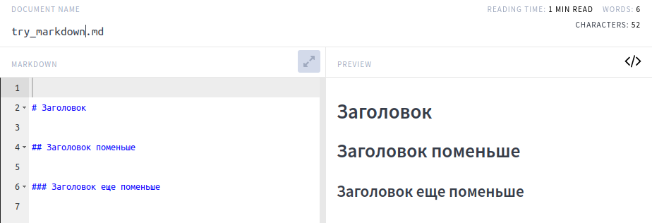
Можно обозначать заголовки через подчеркивания. Хорошим тоном считается отделение заголовка от текста выше и ниже, а также отделение знака решетки от текста заголовка:
...какой-то текст до.
# Заголовок
Начало раздела...
Абзацы¶
Чтобы в тексте начать новый абзац, разделите текст пустой строкой:
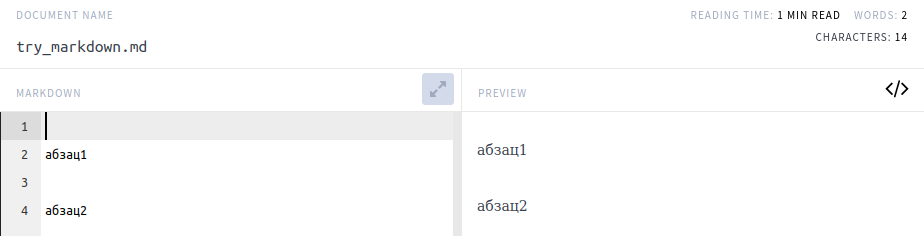
Хорошим тоном считается писать текст без отступов.
Так делаем:
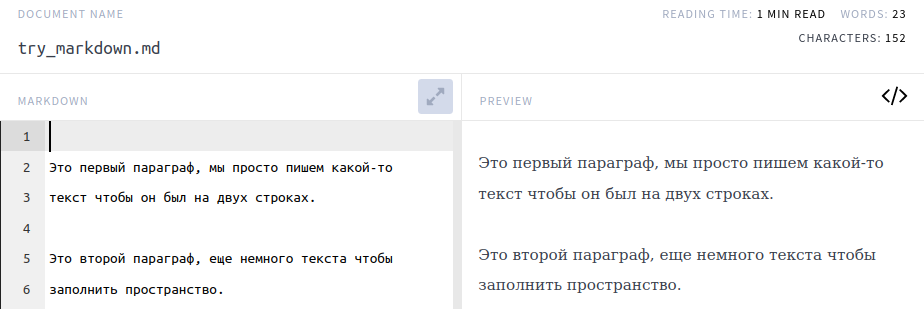
А так нет:
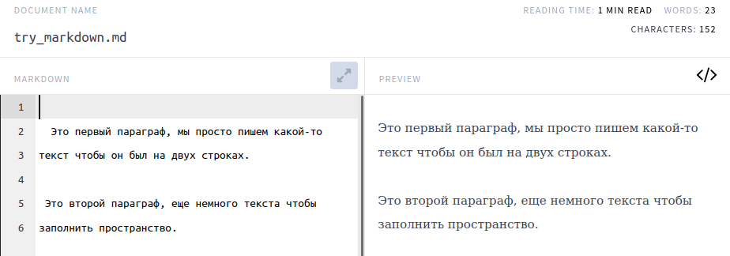
Хотя результат будет один и тот же, мы всегда думаем не только о тех, кто читает собранный документ, но и о тех, кто читает исходник. Различные отступы сильно затрудняют чтение.
Форматирование текста¶
Текст можно делать жирным или курсивом:
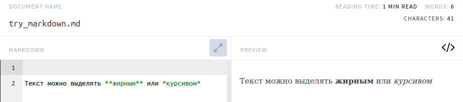
Вместо звездочек можно использовать подчеркивания, но звездочки являются более универсальным способом выделения текста.
Задание: как сделать шрифт жирным курсивом.
Списки¶
В Markdown можно делать нумерованный список или просто перечисление пунктов.
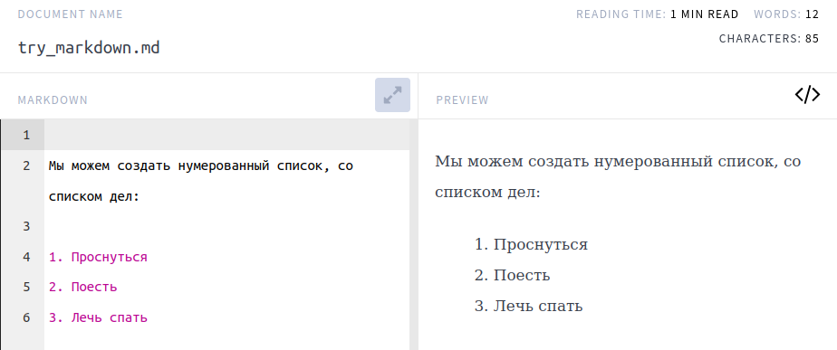
Мы можем использовать разные символы для ненумерованных списков (-, *, +), хорошей практикой является использование одного из них:
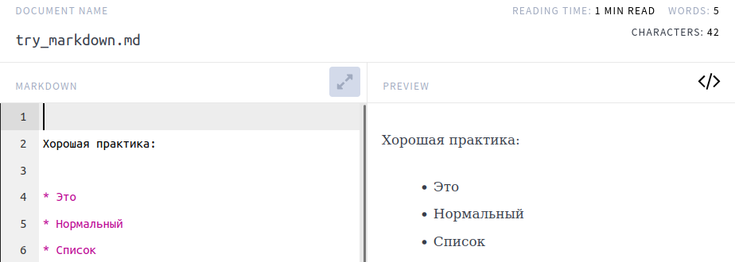
Не смешивайте несколько разных символов:
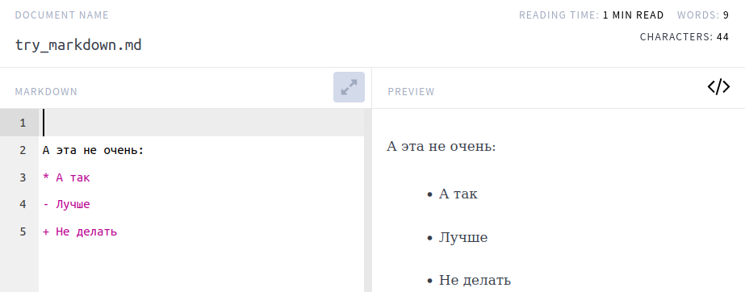
Ссылки¶
Для того чтобы вставить ссылку, пишем ее название в [] и после саму ссылку в (), название будет отображено в собранном документе:
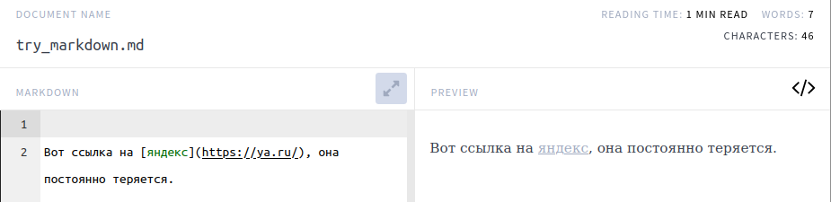
Можно не вставлять ссылки в самом тексте, а вести их список отдельно и использовать id ссылки там, где нужно.
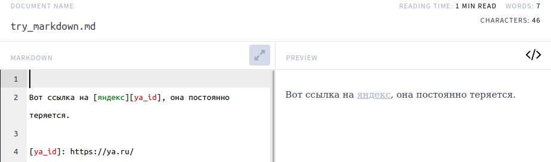
Вставка изображений¶
Вставка изображений напоминает использование ссылок. Мы пишем текст, который будет показан вместо изображения, если оно не будет подгружено, в [], и указываем путь или ссылку на изображение. Вначале мы ставим восклицательный знак, а в круглых скобках можем указать всплывающую подсказку:


Если ошибиться в пути, будет показан текст из []:


Задание: проверьте, можно ли вести список картинок отдельно, например, в конце документа, и вставлять их в нужное место, используя id.
Код¶
В случае необходимости процитировать в документации исходный код программы или его части используются специализированные форматированные блоки, в которые помещаются фрагменты исходного кода программы. Это похоже на HTML-теги. Для создания блока кода в языке Markdown необходимо обрамить его символами ``` код программы ```. Многие программы поддерживают форматирование текста Markdown в соответствии со стилем содержимого. Если мы оформим код программы, то в режиме просмотра его синтаксис будет подсвечиваться (как в среде разработке). Для лучшего распознавания стиля языка программирования следует указывать название языка или скрипта для применения подсветки его синтаксиса. Например, для представления фрагмента программы на языке Python лучше оформить его следующим образом:
```python
import os
def foo():
path = os.getcwd()
print(f» Путь к текущей директории = {}\n\nСписок файлов:\n»)
rez = sorted(os.listdir(path)
for n, item in enumerate(rez):
print(n+1, item)
```
После того как вы откроете этот документ, например, в браузере, вы увидите что код преобразился, его стиль изменился и стал больше похож на программный код.
import os
def foo():
path = os.getcwd()
print(f" Путь к текущей директории = {}\n\nСписок файлов:\n")
rez = sorted(os.listdir(path)
for n, item in enumerate(rez):
print(n+1, item)
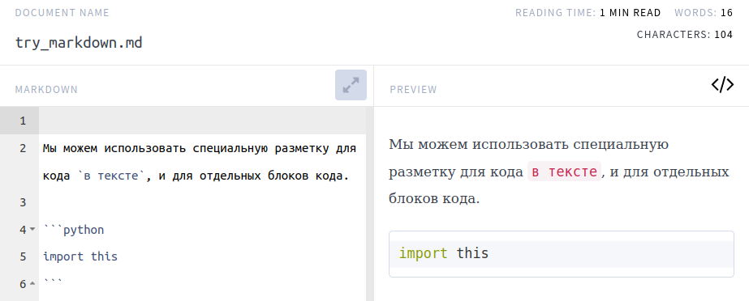
Цитирование¶
В текст можно вставлять цитаты:
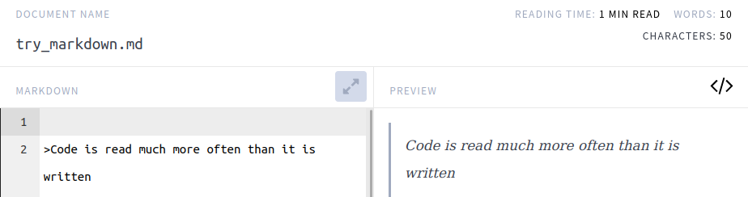
reStructuredText¶
Сейчас будет неожиданно. Но дальше нам будет нужен другой язык разметки — reStructedText. Для тех, кто потратил время на материал выше, будет несложно освоить и reStructedText. Причины, по которым мы описали Markdown и затем предложили переключиться на reStructedText, две:
Курс написан с использованием
Markdown.Инструмент (Sphinx), который соберет документацию для нашего пакета и сделает из нее красивые
html-страницы илиpdf, работает нативно с файламиreStructuredText. Для работы сMarkdownтребуется подключать дополнительный плагин.
Вы можете изучить отличия чуть позже, сейчас мы возьмем open source конвертер md в rst и используем его. Для README это вполне рабочий вариант. Серьезную документацию лучше сразу писать в формате rst.
Sphinx¶
Sphinx — это достаточно мощный инструмент, который может собрать не только документацию к проекту и сделать из нее веб-страницы, которые мы можем потом разместить на readthedocs, но и текст для мануалов man, которые являются стандартными для bash.
Обращайте внимание на то, в каких каталогах мы выполняем те или иные операции в bash во вставках кода ниже
Создадим пустой каталог и перейдем в него, создадим каталог для документации в этой папке и заберем себе README.md:
(mtracker) artem@pc:~/tmp$ mkdir test_the_docs
(mtracker) artem@pc:~/tmp/test_the_docs$ cd test_the_docs
(mtracker) artem@pc:~/tmp/test_the_docs$ mkdir docs
(mtracker) artem@pc:~/tmp/test_the_docs$ wget https://raw.githubusercontent.com/standlab/mtracker/main/README.md
(mtracker) artem@pc:~/tmp/test_the_docs$ ls
docs README.md
Теперь установим sphinx и конвертер rst -> md, конвертируем README.md:
(mtracker) artem@pc:~/tmp/test_the_docs$ pip install sphinx
(mtracker) artem@pc:~/tmp/test_the_docs$ pip install m2r
(mtracker) artem@pc:~/tmp/test_the_docs$ m2r README.md
(mtracker) artem@pc:~/tmp/test_the_docs$ ls
docs README.md README.rst
Примечание: если бы у нас сразу был файл в формате rst, команды с m2r можно было бы пропустить.
Теперь мы готовы инициализировать каталог с документацией.
(mtracker) artem@pc:~/tmp/test_the_docs$ cd docs
(mtracker) artem@pc:~/tmp/test_the_docs/docs$ sphinx-quickstart
(mtracker) artem@pc:~/tmp/test_the_docs/docs$ ls
build make.bat Makefile source
На этом этапе вам будут заданы вопросы про название проекта, автора, версию и язык документации. На вопрос, разделять ли исходники и собранную документацию, отвечаем «да»:
> Separate source and build directories (y/n) [n]: y
Теперь зайдем в файл nano ./source/index.rst и добавим в конец строки:
Readme File
===========
.. include:: ../../README.rst
Это нужно для того, чтобы содержимое README было доступно в документации. Мы пишем ../../, так как README.rst находится на два уровня выше, чем содержимое каталога source. Теперь мы готовы собрать документацию:
(mtracker) artem@pc:~/tmp/test_the_docs/docs$ sphinx-build -b html source build
Running Sphinx v5.3.0
loading translations [ru]... готово
loading pickled environment... готово
building [mo]: targets for 0 po files that are out of date
building [html]: targets for 1 source files that are out of date
updating environment: 0 added, 1 changed, 0 removed
reading sources... [100%] index
looking for now-outdated files... none found
pickling environment... готово
checking consistency... готово
preparing documents... готово
writing output... [100%] index
generating indices... genindex готово
writing additional pages... search готово
copying static files... готово
copying extra files... готово
dumping search index in Russian (code: ru)... готово
dumping object inventory... готово
сборка завершена успешно.
(mtracker) artem@pc:~/tmp/test_the_docs/docs$ browse ./build/index.html
После этого должна открыться страница, на которой, кроме всего прочего, мы можем увидеть README.
Markdown и Sphinx¶
Ниже приведены шаги (в ОС Linux), чтобы настроить окружение для сборки документации Markdown с помощью Sphinx. Мы использовали этот подход при сборке данного документа. Создайте виртуальное окружение (опционально):
conda create -n sphinx_md python=3.10
conda activate sphinx_md
Установите Sphinx и поддержку Markdown:
pip install sphinx
pip install --upgrade myst-parser
Укажите, какие файлы должны войти в документацию:
.. toolchain documentation master file, created by
sphinx-quickstart on Wed Mar 1 10:24:16 2023.
You can adapt this file completely to your liking, but it should at least
contain the root `toctree` directive.
Welcome to toolchain's documentation!
=====================================
.. toctree::
:maxdepth: 2
:caption: Contents:
00_terms/main.md
01_open_source/main.md
Indices and tables
==================
* :ref:`genindex`
* :ref:`modindex`
* :ref:`search`
Соберите html (находясь в корневой директории проекта):
make html
В корневой директории появится папка build, где будет находиться собранная документация.
Для сборки pdf установите latexmk и поддержку кириллицы:
sudo apt install latexmk
sudo apt install texlive-lang-cyrillic
make latexpdf
Документация из кода¶
Здесь речь пойдет о том, как писать комментарии к коду так, чтобы из них можно было собрать документацию. В Python мы можем снабдить функции и классы многострочным комментарием, который будет распознаваться системами сборки документации как docstring, и на их основе будет формироваться документация к вашему проекту. В документацию попадут не все комментарии их кода, а только тe, которые оформлены как docstring. Правильно оформленный docstring может помочь другим разработчикам, а спустя время даже вам, разобраться в работе функции.
Для того чтобы создать комментарий, нужно заключить текст в тройные кавычки. Существует несколько форматов оформления docstring, ниже приведено форматирование в стиле Google.
def my_function(arg1, arg2):
"""
Brief description of the function.
More detailed explanation of the function's purpose,
arguments, and expected behavior.
Parameters:
arg1 (type): Description of the first parameter.
arg2 (type): Description of the second parameter.
Returns:
return_type: Description of the value returned by the function.
Raises:
ExceptionType: Description of the exception raised, if any.
"""
# Function implementation here
return result
Мы видим, что есть несколько разделов внутри docstring.
* Краткое описание (в одну строку).
* Более подробное описание.
* Входные аргументы с указанием типов.
* Тип и описание выходного значения.
* Какие ошибки могут быть выброшены из функции?
Также можно оформить docstring в других форматах, например, в стиле Sphinx.
def my_function(arg1, arg2):
"""
Brief description of the function.
:param arg1: Description of the first argument.
:type arg1: type
:param arg2: Description of the second argument.
:type arg2: type
:return: Description of the value returned by the function.
:rtype: return_type
:raises ExceptionType: Description of the exception raised, if any.
"""
# Function implementation here
return result
Или в стиле NumpyDoc, который был вдохновлен документацией к библиотеке numpy:
def my_function(arg1, arg2):
"""
Brief description of the function.
Parameters
----------
arg1 : type
Description of the first argument.
arg2 : type
Description of the second argument.
Returns
-------
return_type
Description of the value returned by the function.
Raises
------
ExceptionType
Description of the exception raised, if any.
"""
# Function implementation here
return result
Оформление документации¶
Теперь попробуем попрактиковаться с документацией. Мы хотим создать следующую структуру проекта, назначение файлов станет понятно ниже. Часть файлов будет сгенерирована автоматически, другие мы будем править, оставшиеся нам нужно будет создать самим.
project/
├── docs/
│ ├── Makefile
│ ├── conf.py
│ ├── index.rst
│ ├── usage.rst
│ └── api.rst
└── src/
└── utils_mix.py
Создадим новый проект, который назовем utils_mix. Создадим в нем две папки: src для кода и docs для документации.
mkdir src
mkdir docs
Перейдем в папку docs и выполним там инициализацию с помощью sphinx, который мы ранее установили с помощью pip install sphinx.
cd docs
sphinx-quickstart
После этого утилита запросит нужную информацию.
Please enter values for the following settings (just press Enter to
accept a default value, if one is given in brackets).
Selected root path: .
You have two options for placing the build directory for Sphinx output.
Either, you use a directory "_build" within the root path, or you separate
"source" and "build" directories within the root path.
> Separate source and build directories (y/n) [n]: n
The project name will occur in several places in the built documentation.
> Project name: utils_mix
> Author name(s): ArtemVesnin
> Релиз проекта []: 1.0.
> Язык проекта [en]: en
И создаст несколько файлов, включая Makefile для автоматический сборки.
ls
_build conf.py index.rst make.bat Makefile _static _templates
В текущем состоянии документация будет собираться и доступна, если открыть в браузере _build/html/index.html, но мы пока мы не увидим документации по коду.
make html
Running Sphinx v7.0.1
making output directory... готово
....
....
dumping object inventory... готово
сборка завершена успешно.
Теперь перейдем в папку src и создадим там модуль utils_mix.py:
cd ../src
touch utils_mix.py
И добавим в этот модуль код с написанными docstring.
def add_numbers(num1, num2):
"""
Add two numbers together.
This function takes two numeric arguments, `num1` and `num2`,
and returns their sum.
Parameters:
num1 (int or float): The first number to be added.
num2 (int or float): The second number to be added.
Returns:
float: The sum of `num1` and `num2`.
"""
return num1 + num2
def multiply_numbers(num1, num2):
"""
Multiply two numbers.
This function takes two numeric arguments, `num1` and `num2`,
and returns their product.
Parameters:
num1 (int or float): The first number to be multiplied.
num2 (int or float): The second number to be multiplied.
Returns:
float: The product of `num1` and `num2`.
"""
return num1 * num2
def greet(name):
"""
Greet a person.
This function takes a string argument `name` and returns a greeting message.
Parameters:
name (str): The name of the person to greet.
Returns:
str: A greeting message with the person's name.
"""
return f"Hello, {name}! How are you today?"
Мы можем структурировать нашу документацию, в нашем случае мы хотим, чтобы docstring попали в раздел API. Создадим файл api.rst и добавим в него следующее содержание.
API Reference
=============
.. automodule:: utils_mix
:members:
:undoc-members:
:show-inheritance:
Таким образом мы говорим, что нужно сгенерировать документацию из модуля utils_mix (файл utils_mix.py).
* `:members:` чтобы включить функции и классы из модуля
* `:undoc-members:` для того чтобы включить даже то у чего нет docstring (опционально)
* `:show-inheritance:` для того чтобы показывать информацию о наследовании классов друг другом.
И изменим index.rst, чтобы api.rst стал включен в общую структуру. Добавим строку api в раздел .. toctree::
.. toctree::
:maxdepth: 2
:caption: Contents:
api
Последнее изменение, которое нам нужно сделать, это добавить в conf.py несколько строчек кода так, чтобы система сборки находила модули автоматически:
import os
import sys
sys.path.insert(0, os.path.abspath('../src'))
И включить поддержку сборки документации из docstring:
extensions = ['sphinx.ext.autodoc']
Запускаем сборку еще раз и получаем
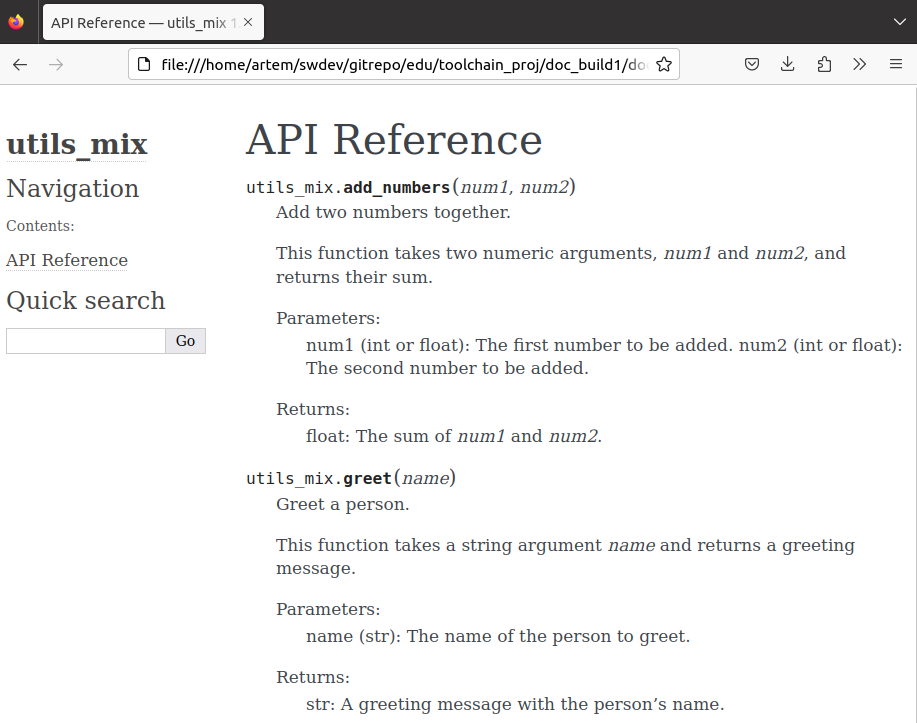
Мы также можем включать документы, которые написаны нами (а не сгенерированы автоматически), например, примеры по использованию кода. Создадим файл usage.rst и добавим в него следующее содержимое.
Usage Guide
===========
Introduction
------------
Welcome to the usage guide for `utils_mix`. This guide provides examples and explanations on how to use the functions defined in the `utils_mix` Python module.
Importing the Module
--------------------
To start using `utils_mix`, you need to import it into your Python script or interactive session:
.. code-block:: python
import utils_mix
Add and Multiply Numbers
------------------------
The `utils_mix` provides two simple functions for basic arithmetic operations:
- :func:`utils_mix.add_numbers`: Add two numbers together.
- :func:`utils.multiply_numbers`: Multiply two numbers.
Example usages:
.. code-block:: python
# Import the module
from utils_mix import add_numbers, multiply_numbers
# Add two numbers
result1 = add_numbers(1, 2)
print("Result of addition:", result1) # Output: 3
# Multiply two numbers
result2 = multiply_numbers(5, 6)
print("Result of multiplication:", result2) # Output: 30
Greet a Person
--------------
The `utils_mix` also provides a simple function to greet a person:
- :func:`utils_mix.greet`: Greet a person with a custom message.
Example usage:
.. code-block:: python
# Import the module
from utils_mix import greet
# Greet a person
greeting = greet("Alice")
print(greeting) # Output: Hello, Alice! How are you today?
Включим его в документацию так же, как мы делали с api.rst, сделаем сборку make html и увидим обновленную документацию:
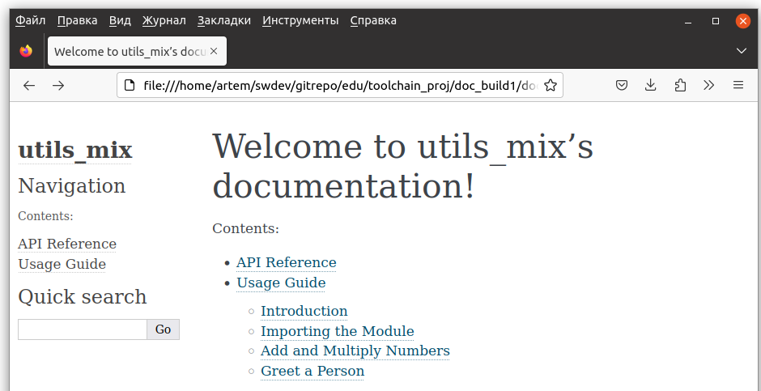